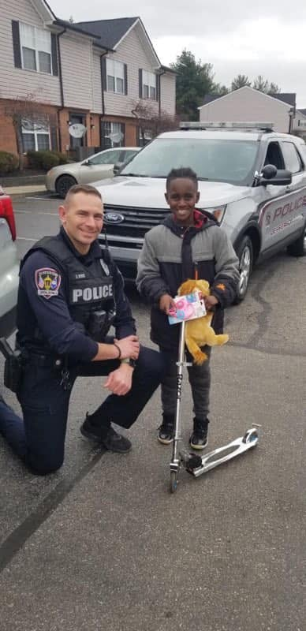
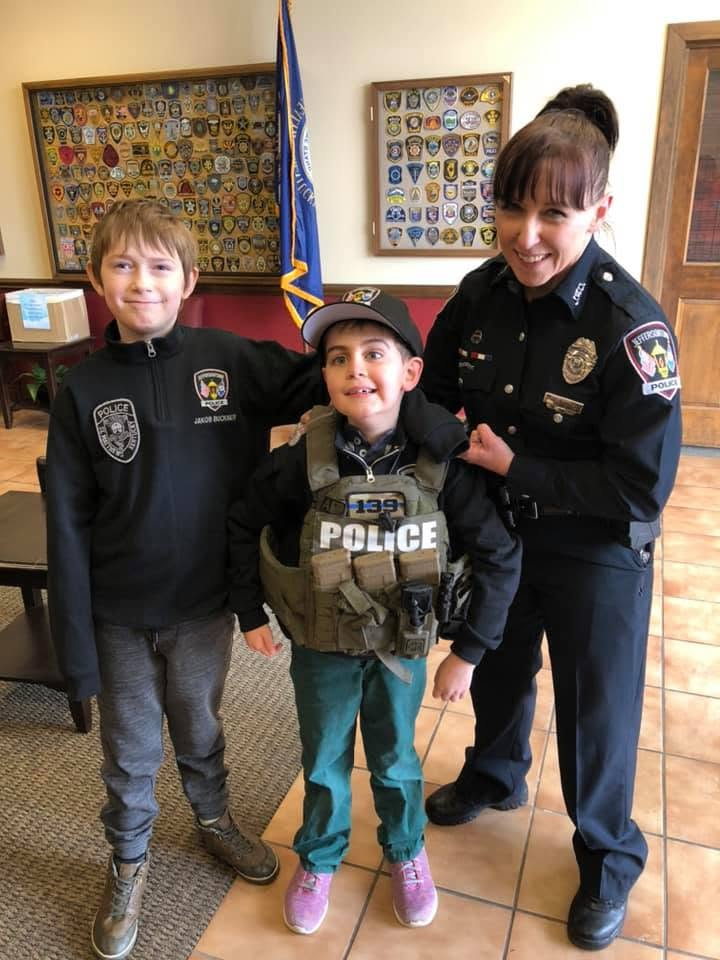

Jeffersontown
Jeffersontown
Neighbors + Officers
Community Events
Support for National Night Out, neighborhood gatherings, open houses and other events that create relaxed opportunities for conversation and relationship-building.
Creating opportunities for officers and residents to connect, serve, learn and build a stronger Jeffersontown together.

Community policing is strengthened when people have opportunities to know the officers who serve them. Foundation support helps create welcoming, positive ways for residents and officers to connect—from neighborhood gatherings and youth safety programs to acts of service that remind families JPD is part of the community it serves.
These investments help build relationships before a crisis happens, open lines of communication and give officers additional ways to serve Jeffersontown beyond traditional law-enforcement functions.


Foundation support can help expand the events, programs and acts of service that bring officers and residents together in positive, meaningful ways.
Support for National Night Out, neighborhood gatherings, open houses and other events that create relaxed opportunities for conversation and relationship-building.

Helping support Coffee with a Cop, Donuts with a Cop, school visits and similar informal opportunities to meet officers outside of an emergency.

Resources for bicycle-safety courses, youth activities, school partnerships and family-focused safety education that build confidence and trust.

Supporting officer-led acts of service—from holiday giving and hospital visits to charitable projects and other moments when JPD can show up in a different way.
Positive interactions create familiarity and strengthen relationships between residents and the officers who serve them.
Informal settings create space to listen, ask questions and better understand one another.
Shared events, safety education and service projects reinforce that public safety is a community partnership.

Sometimes community engagement is a large public event. Sometimes it is an officer sitting with a child, delivering a holiday gift, helping a family or simply taking time to listen.
By investing in connection, service and shared experiences, the Foundation helps strengthen the relationship between law enforcement and the community—one interaction at a time.
Your support can help create more opportunities for officers and residents to meet, serve, learn and build trust together.
Support Community Engagement →